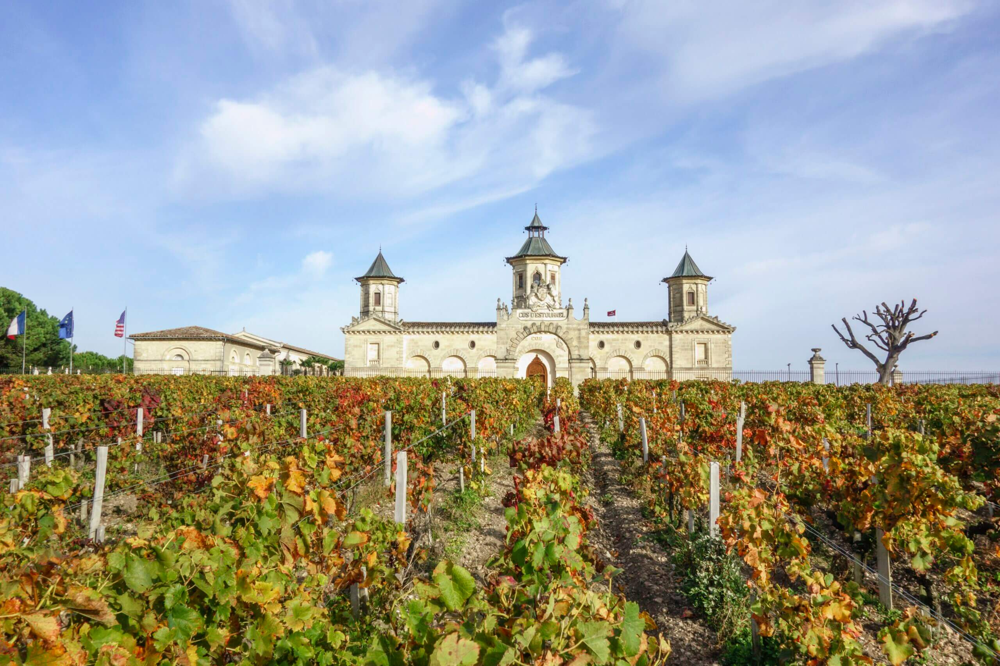
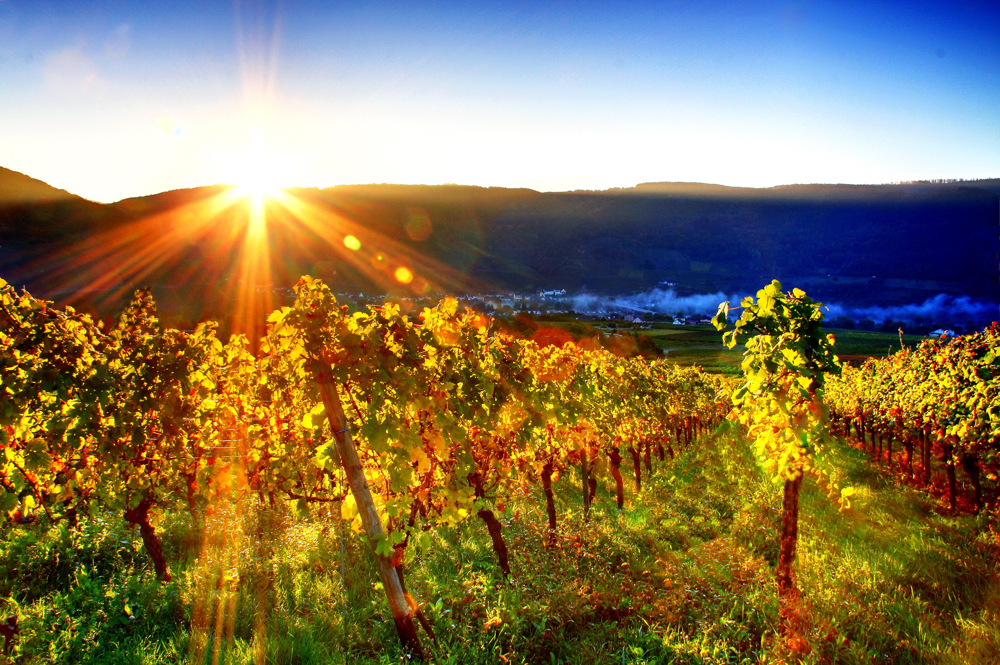

Experience the heart of French culture in Bordeaux, where romance and red wine flow together. Visit historic vineyards, sample world-class vintages, and tour grand estates like Roquetaillade Castle and Château Boutinet. Stroll through Saint-Émilion and Bordeaux's cobblestone streets or bike through the countryside.
Learn More
Discover France's art, history, and cuisine on a 14-night voyage along the Seine, Garonne, Dordogne, and Gironde Estuary. Begin in Paris and journey through Normandy to the D-Day beaches. Visit Monet's Giverny, explore fairytale châteaux, and bike through the countryside. Then travel to Bordeaux to savor world-class wines and admire landmarks like Blaye Citadel and Cité du Vin.
Learn More